An AI research agent that reads the neighbourhood’s news, events and buzz, then tells a small café what’s coming, why it matters and what to do about it.
Agentic AILive local newsEvent intelligenceMidtown NYC
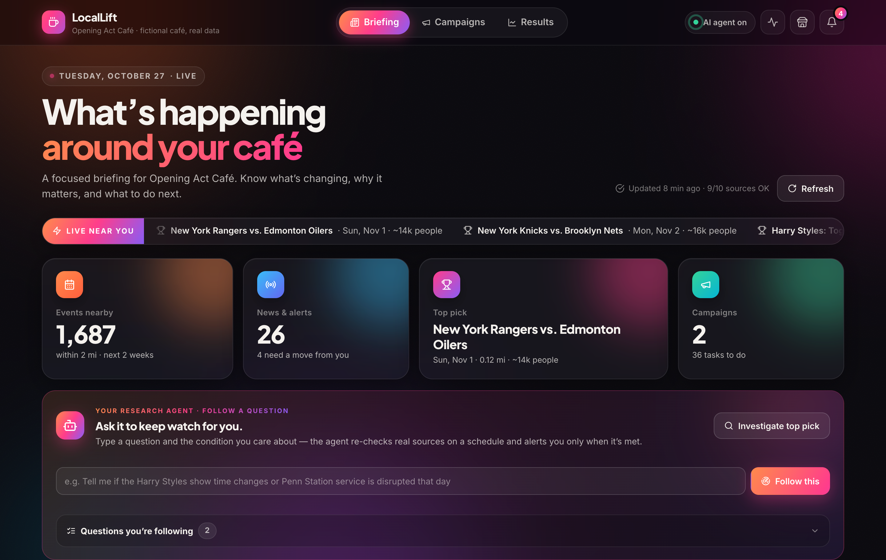
Class project · Newsren briefOctober 27, 2026
Inside
The story in seven parts
This document follows one café owner through the problem, the idea, the product and the AI that does the work. Every screenshot is labelled with the capability it shows.
Each picture has a coloured tag that names the capability it proves:
News news intelligence,
Agent agentic AI,
Events event and crowd intelligence,
Action plans and money, and
Trust evidence and safety.
A quick note on what’s real
The café, “Opening Act Café” near Penn Station and Madison Square Garden, is made up so we could show the idea end to end. Everything around it is real: the events come from Ticketmaster and NYC Parks, the news from Gothamist, Google News and GDELT, the transit alerts from the MTA, permits from NYC Open Data, and the social buzz from Bluesky and X.
1The problem
A small café that keeps finding out too late
Meet Maya. She runs Opening Act Café, two blocks from Madison Square Garden in Midtown Manhattan.
Some evenings, a wave of concert-goers pours through the door an hour before a show. The line goes out the door, the pastry case is empty by 6pm, and Maya is the only one on the till. She loses sales simply because she can’t serve people fast enough.
Other days she stocks up for a crowd that never comes: the game was moved, a street was closed for a parade, or the subway line was down.
“Everything that affects my day is in the news somewhere. I just never see it in time, and I don’t have time to look.”
Why this is a burning problem
1
The signals are scattered
Event listings, local news, city permits, subway alerts and social posts all live in different places. Nobody has time to check ten sites every morning.
2
News doesn’t say “so what”
A headline says “Harry Styles plays MSG.” It doesn’t say “expect about 80 extra customers between 5 and 7pm.”
3
Timing is everything
Knowing about a crowd the morning of is too late. You need days to schedule staff, order stock and plan a special.
4
Plans change quietly
Cancellations, time changes and transit disruptions are reported in passing, often after you’ve already prepared.
The cost of not knowing
Small food businesses run on thin margins. One missed rush, or one over-prepared quiet night, can wipe out a week’s profit. Big chains have analysts for this. Independent cafés don’t.
2The idea
Local news as an early-warning system
The Newsren brief asks a simple question: what if news didn’t just inform you, but told you what to do? We applied that to one person who really needs it: a café owner.
News is the earliest public signal that something will change on your street. A concert announcement, a road closure permit, a “show postponed” story, a subway service change. LocalLift reads all of it, connects it to the café, and turns it into a decision.
From headline to action
1 · ReadNews, events, permits, transit alerts and social posts near the café
›
2 · ConnectGroup stories about the same thing into one “development”
›
3 · VerifyCheck against the official listing; flag what disagrees
›
4 · ExplainWhy it matters to this café: crowd, timing, distance
›
5 · ActA specific step: staff up, run a special, or change nothing
How news shows up inside the product
N
Local news & alerts
Street events, transit changes and neighbourhood stories, each with a suggested move.
S
Story intelligence
Many articles about one thing become one evolving story with a “what changed?” history.
E
News per event
Each event shows only the coverage that’s actually about it, and checks it for cancellations or time changes.
B
Social buzz
How much people are talking about an event on X and Bluesky, and whether it’s rising.
Q
Follow a question
“Tell me if this game is called off.” The agent keeps checking the news for you.
A
Ask the news
Ask anything about an event and get an answer built from cited sources.
Keeping the news relevant. Early on, the Harry Styles page showed articles about sneakers and Marvel films, because those stories happened to mention him. We added a rule: an article only counts if the event is in the headline, or the headline plus the text clearly talks about the show or venue. Now the news tab only shows coverage about the show.
3Meet LocalLift
One screen that answers “what’s coming?”
Maya opens LocalLift with her morning coffee. In under a minute she knows her week.
NewsThe Local Briefing. A live ticker of what’s happening nearby, four headline numbers for the week, and the AI research agent right at the top, ready to investigate or keep watch.
A typical morning, in five taps
Read the briefing. The top picks for the week and anything urgent, like a cancellation or a subway closure.
Open an event. See the expected crowd, the distance, the relevant news and the buzz.
Ask the agent. “Is this still on, and when will people pass the café?” It checks sources and answers with citations.
Plan a campaign. A themed special and a step-by-step plan, with the profit worked out.
Check Rush Radar. Which hours will be busy, and whether she needs an extra pair of hands.
4The features
Your shortlist and the map
There are over 1,700 events within reach each fortnight. Maya doesn’t need 1,700. She needs the three that matter.
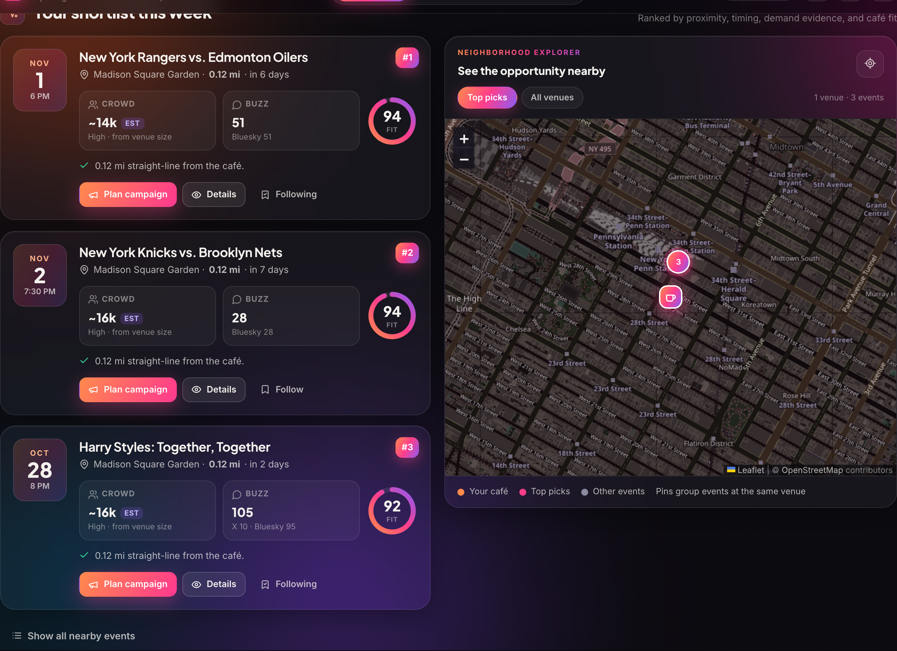
EventsTop picks this week, on a live map. Each event is scored on how close it is, how soon it is, how big the crowd is and whether it fits the café’s opening hours. The map pins the café in orange and the best opportunities in pink.
How the ranking works
A plain, explainable score: distance, timing, crowd size, demand evidence and café fit. No black box: the same inputs always give the same rank.
Crowd estimates, never “unknown”
A published figure if there is one; otherwise the venue’s capacity (from Wikidata) times a typical sell-through; otherwise a ballpark for that type of event. Always labelled as an estimate.
4The features
Inside an event: why it matters
Tapping an event opens its full picture: the crowd, the timing, what the news says and exactly what to do.
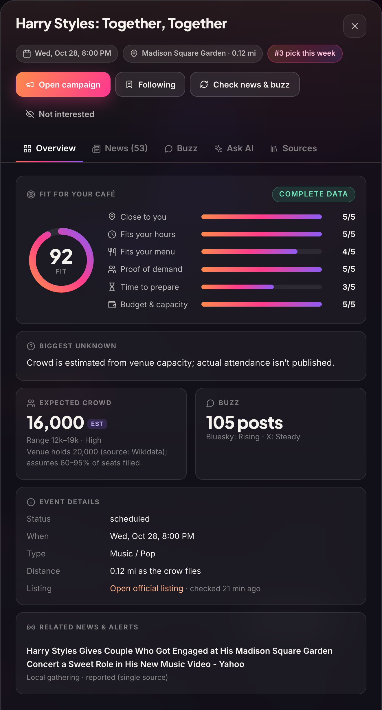
EventsEvent overview for Harry Styles at Madison Square Garden, 0.12 miles away.
How to read this panel
Fit score (92)How well this event suits this café: close by, during opening hours, matches the menu, strong demand, enough time to prepare, within budget.
Biggest unknownThe one thing we couldn’t confirm. Here: real attendance isn’t published, so the crowd is estimated.
Expected crowd: about 16,000The arena holds 20,000 (from Wikidata), and a typical show fills 60 to 95% of seats. Always marked “EST”.
Buzz: 105 postsLive chatter on Bluesky and X, with a trend for each.
Related newsStories linked to this event, labelled with how well they’re confirmed.
Official listingA link to the source, and when we last checked it.
“#3 pick this week”
The shortlist ranks the next 7 days. A separate overall rank covers 14 days and gives extra credit to events further out, because they leave more time to prepare.
4The features
The news and the buzz around each event
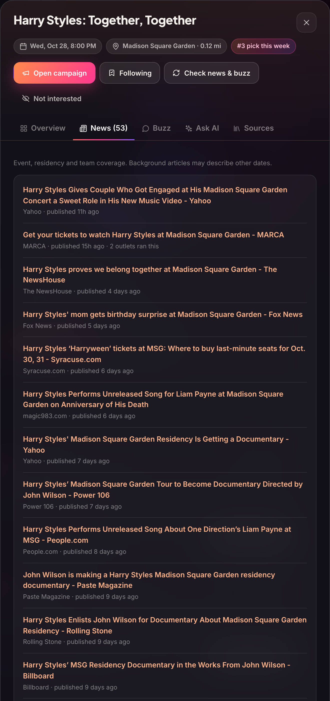
NewsEvent news. Only coverage that is really about this show, each item linked to its source and dated.
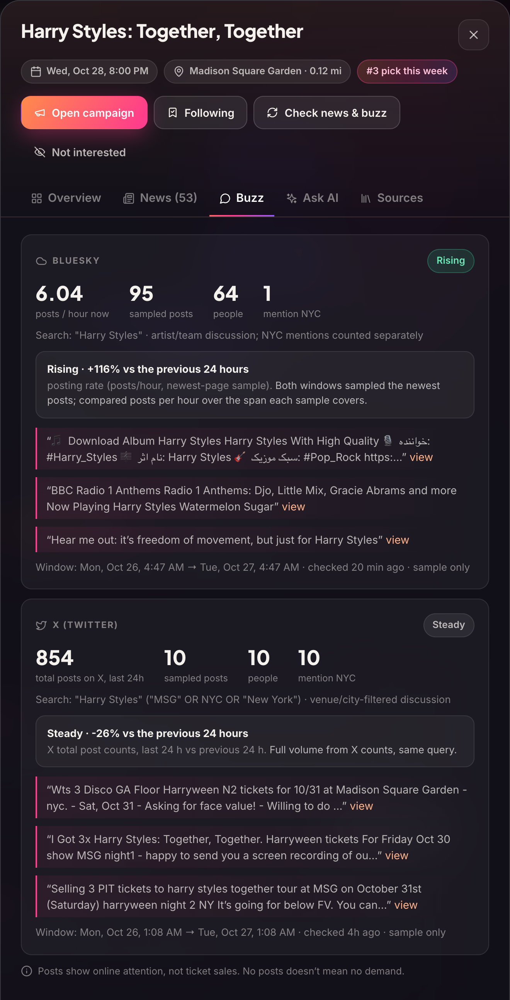
NewsSocial buzz. Post counts on X and Bluesky shown separately, with a trend that compares today with yesterday.
Why buzz matters
A sold-out show and a half-empty one look the same on a ticket listing. Rising chatter is an early hint that more fans will show up, or that something has changed. X is checked once a day for the top two events, under a $5 a month cap that Maya approved. Bluesky is free and checked more often.
4The features
Local news that tells you what to do
Not every important change is a concert. Street fairs, parades, closures and subway work matter too.
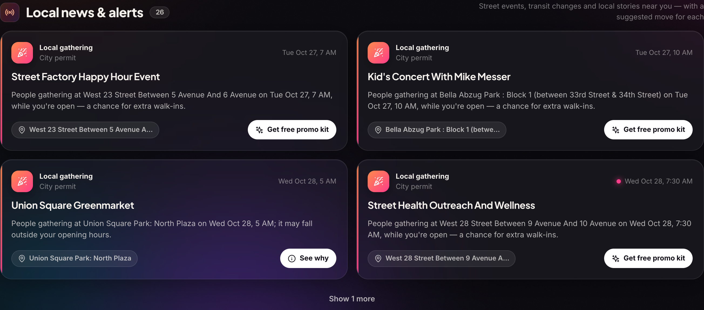
NewsLocal news & alerts. Stories from Gothamist, Google News, NYC permits and MTA alerts, grouped into developments. Each card says what happened, why it matters to the café and a suggested move.
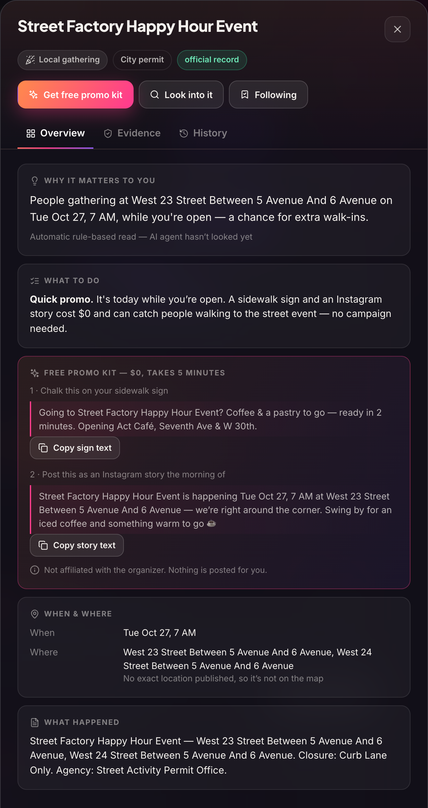
NewsOne development, opened. A city permit for a street event nearby, turned into a $0 promo.
From a permit to a plan
This one started as a dry city record: a curb-lane closure for a street event on West 23rd Street. LocalLift noticed it’s close by, happens while the café is open, and could bring people past the door.
Why it matters to youWritten for this café, not for a general reader.
What to doA specific move sized to the opportunity. Here, a quick promo, because it’s today and small.
Free promo kitReady-to-copy text for a sidewalk sign and an Instagram story. Costs $0, takes 5 minutes. Nothing is posted for you.
Evidence and historyEvery source behind the story, and a version history of what changed since Maya last looked.
4The features
Rush Radar: when to expect the wave
A seven-day, hour-by-hour view of extra walk-ins from every nearby event, stacked on top of normal business.
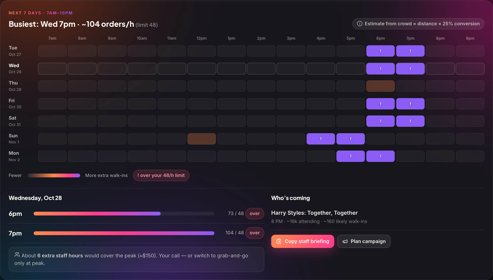
EventsRush Radar. Each column is an hour of the day (4pm, 5pm…). The brighter the cell, the more extra customers. A “!” means the café would be over its limit of orders per hour.
How it’s worked out
Crowd size × the share of people who pass the café (based on distance) × the share who come in. The walk-ins are spread over the two hours before the event starts, because that’s when people grab a coffee on the way.
Tap a day and LocalLift writes a short staff briefing: which events are on, when it gets busy, what to prep, and whether an extra staff hour would pay off.
Staff briefing · Wednesday Oct 28Harry Styles at MSG, 8:00 PM (~16,000 attending, ~160 likely walk-ins)
6pm: ~73 orders expected (normal ~8), over our 48/h limit
7pm: ~104 orders expected, over our limit by ~56
Prep: pre-wrap grab-and-go; cold brew pre-poured for the peak.
Owner decision: ~6 extra staff hours (≈$150), or grab-and-go only at peak.
Script: “Heading to the show? We’re ready in two minutes.”
ActionThe real staff briefing LocalLift wrote for Wednesday, one tap to copy.
4The features
From insight to a plan that pays
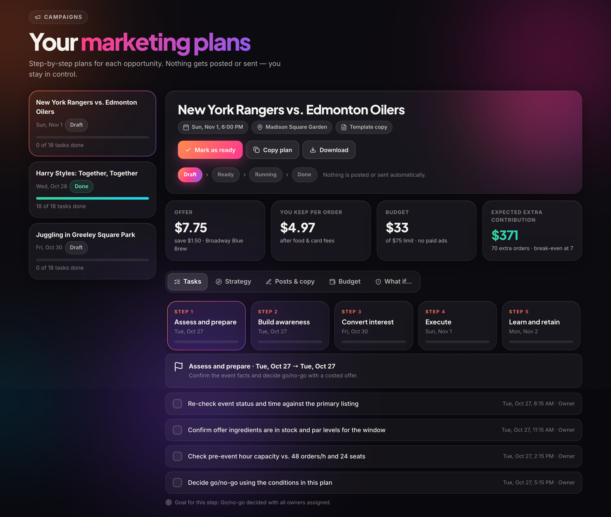
ActionCampaign plan. A themed special built from the café’s real menu (here, the “Broadway Blue Brew” at $7.75), five steps from “assess and prepare” to “learn and retain”, each with dated tasks.
1
Themed, not generic
The special nods to the event using real menu items. No artist names, no lyrics, add-ons under $0.40.
2
Ready-made copy
Sign text, social captions and what staff should say, all editable.
3
Owner in control
Draft, ready, running, done. Nothing is posted or sent automatically.
4The features
What could you earn?
Every plan comes with honest numbers: three scenarios, worked out by code, not by the AI.
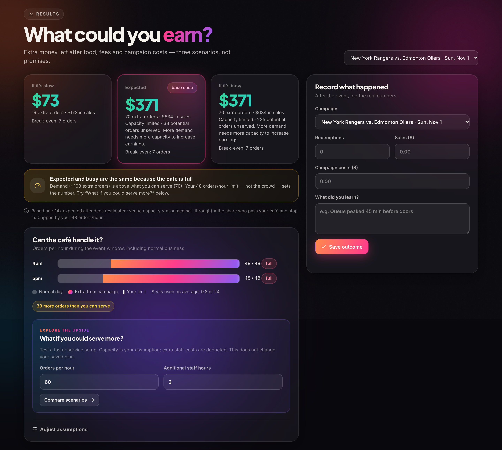
ActionResults. Slow, expected and busy scenarios after food, fees and campaign costs. Here the café would sell out its capacity, so LocalLift says so and lets Maya test “what if we could serve more?”. After the event she records what really happened.
Why “expected” and “busy” can match
If more people want coffee than the café can make in an hour, the café’s limit sets the number, not the crowd. Showing that honestly stops an owner from over-spending on promotion they can’t serve.
5How it is agentic
Not a chatbot. A researcher with a job.
The brief is clear: calling an AI to write a summary is not agentic. An agent needs a goal, the right tools and a controlled way of gathering evidence. Here is how LocalLift does each.
🎯 A clear goal
Every run has one job: investigate an event, answer Maya’s question, judge a news development, scan the week, or keep watch on a question.
🧰 Real tools
It decides which of 14 tools to use, and in what order:
At most 8 look-ups, 60 seconds and 12 steps per run. Every tool call is checked. Only approved websites. Numbers come from code, not from the AI’s imagination.
What a run looks like
Plan“To answer this I need the listing and the latest news.”
›
ActCalls tools: listing, news, buzz, official page
›
ObserveReads the results; notices gaps or conflicts
›
AdaptA source refuses access? Tries the official one instead
›
ReportLabelled answer with sources and what’s still unknown
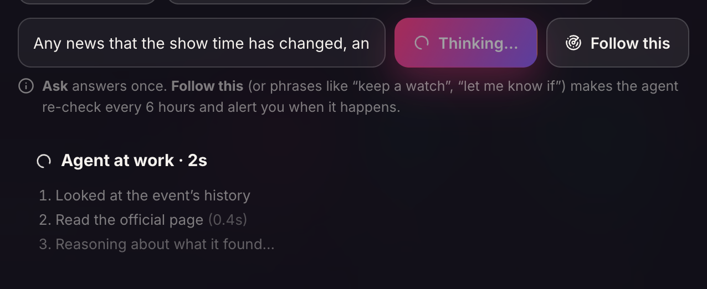
AgentThe agent at work, live. While it runs, Maya sees each step it has finished and how long it took: it is choosing tools, not just writing text.
5How it is agentic
Answers you can check
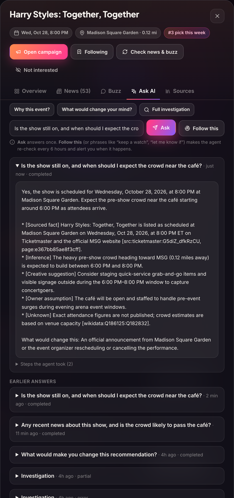
AgentA grounded answer, about 5 seconds after asking.
What makes it trustworthy
A direct answer first“Yes, it’s on. Expect the crowd from about 6pm.”
Every line is labelledSourced fact, inference, creative suggestion, owner assumption or unknown.
Sources are citedThe Ticketmaster listing ID, the official MSG page and the Wikidata venue record.
It says what would change its mindHere: an official cancellation or reschedule.
The steps are on record“Steps the agent took” shows every tool call, so anyone can audit it.
It adapts when things go wrong
In one real run, Ticketmaster’s page refused access. Instead of giving up or guessing, the agent switched to Madison Square Garden’s official page, confirmed the date, recorded the claim and saved a plan. In another, the news service was rate-limited; the agent said so plainly and answered from what it could verify.
Every sentence is labelled:Fact from a source,
Inference reasoned from facts,
Assumption the owner’s own setting,
Unknown couldn’t be verified,
Disputed sources disagree.
5How it is agentic
“Follow a question”: the agent keeps watch
This is the feature that makes LocalLift feel like a colleague. Maya writes a question once, and the agent keeps checking the news for her.
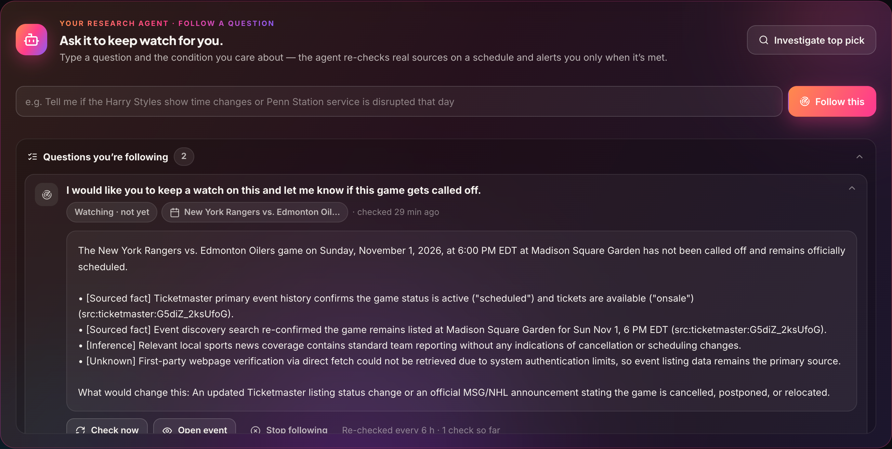
AgentYour research agent. Followed questions with their latest verdict. Each one can be opened, re-checked now or stopped.
Maya asks “Let me know if the Rangers game is called off.” She can type it on the Briefing page or in an event’s Ask tab.
The agent checks right away using the listing, the news and the event’s history, then gives a verdict: met or not met, with reasons.
It re-checks every 6 hours on its own, through the background worker.
It only alerts when the answer changes from “not met” to “met”. Repeated or opinion articles don’t set it off, so no alert fatigue.
6Trust and safety
Why you can believe it
An AI that gives business advice has to be honest about what it knows. These rules are built into the product, not left to chance.
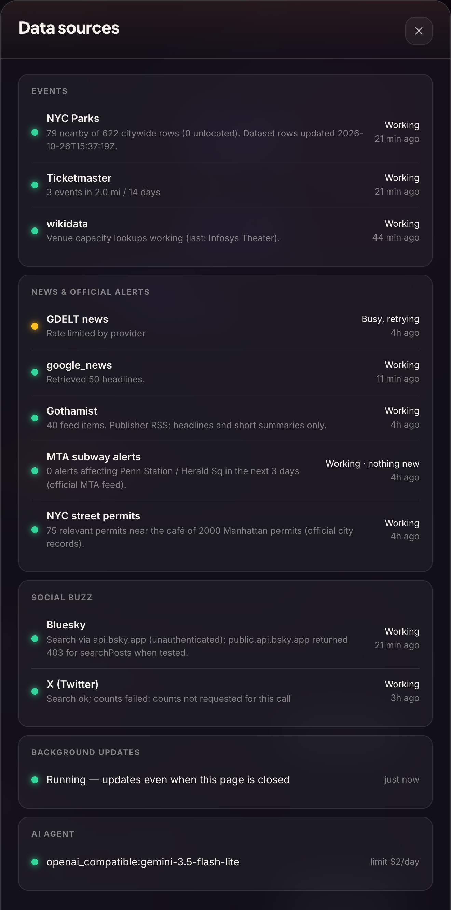
TrustData sources. Live health of every source, when it last worked, and the AI model in use with its daily cost limit.
✓
Every number has a source
Crowd figures, distances and money come from code and cited data. If a number is an estimate, it says “EST” and explains the method.
⚖
Disagreement is shown
If two sources disagree, the claim is marked “disputed”, not quietly picked. An unconfirmed rumour leads to an explicit “no change”.
🔒
Only approved sources
Official APIs, an allow-list of websites and robots.txt respected. If a page blocks us, we report it; we don’t get around it.
✋
A human decides
Nothing is posted, sent or bought by the app. Plans wait for Maya’s review. Paid data runs only under a cap she set.
7How it meets the assignment
The Newsren plan, mapped
The Newsren plan proposes six features and one rule that isn’t optional: real agentic capability. LocalLift takes that blueprint and applies it to one specific reader.
Newsren feature
In LocalLift
Status
My Newsren personal research agent
The Local Briefing for this café’s location, hours, menu and budget, plus the research agent (Investigate and Ask AI)
Built
Story Intelligence
Developments group news, official records and listing changes into one evolving story with a “what changed?” history
Built
News-to-Learning audience adaptation
The same evidence rewritten for the owner (briefing), the staff (Rush Radar briefing) and customers (sign and social copy)
Built
Industry Impact
“Why it matters to Opening Act”: impact on hours, capacity and demand, plus profit scenarios worked out by code
Built
Evidence & Bias Inspection
Source types, claim labels, checks against the official listing, disputed claims kept, a news relevance rule
Built
Follow This Story
Follow a question: the agent re-checks every 6 hours and alerts only when the verdict flips
Built
Agentic core
A goal per run, 14 typed tools, budgets and validation, plans and adapts, reports what it couldn’t verify
Built
Briefing delivery
Opt-in email delivery of briefings, with approval first
Next step
What we’d build next
Email or text delivery of the morning briefing, with the owner’s approval.
Learning from real outcomes: compare predicted walk-ins with recorded sales to tune the estimates.
More neighbourhoods and business types: the same engine works for a bar near a stadium or a shop near a theatre.
☕
LocalLift
The news already knew. Now the café does too.
LocalLift reads the neighbourhood so a small business doesn’t have to. It finds what’s coming, checks it, explains why it matters, and suggests one clear next step, while a person keeps the final say.